3.8 Practice Problems
3.8 Practice Problems
3.8.1 String Manipulation
a. End Swapper. Prompts the user for a word and swaps the first and last letter.
Output 3.8.1a
Enter a word: wombat
WOMBAT -> tombaw
b. Half Swapper. Prompts the user for a word and swaps the first and second halves.
Output 3.8.1b
Enter a word: wombat
wombat -> batwom
c. Inner Spinner. Prompts the user for a word and reverses the characters between the first and
last letter. Use StringBuilder for the reversal.
Output 3.8.1c
Enter a word: wombat
WOMBAT -> wabmot
d. Even Digits to the Front. Prompts the user for a sequence of digits and moves all even digits
to the front. (Hint: replaceAll can be used to remove groups of characters from a string.)
Output 3.8.1d
Enter sequence of digits: 0123456789
Even digits to the front: 0246813579
e. VowelShifter. Prompts the user for a sentence and shifts each vowel (aeiou) to the next
vowel in sequence, wrapping u to a. Only the first letter is capitalized. (Hint: use
replace and apply Character.toUpperCase to the first letter.)
Output 3.8.1e-1
Enter a sentence: Your powers are weak, old man!
Yuar puwirs eri wiek, uld men!
Output 3.8.1e-2
Enter a sentence: I find your lack of faith disturbing.
O fond yuar leck uf feoth dostarbong.
f. Snake. Prompts the user for a word and outputs it in quarter-length substrings on separate
lines, alternating the direction of each substring. The last substring is padded with leading spaces
for proper alignment. The number of spaces to add is (4 - n % 4) % 4, where n is the word
length; generate these spaces using the repeat method on a single-space string. Use
StringBuilder to reverse substrings as needed.
Output 3.8.1f-1
Enter a word: HIPPOPOTAMUS
HIP
POP
OTA
SUM
Output 3.8.1f-2
Enter a word: RATTLESNAKE
RAT
ELT
SNA
EK
Output 3.8.1f-3
Enter a word: BlackWidowSpiders
Black
wodiW
Spide
sr
3.8.2 Arithmetic
a. Seconds After Midnight. Prompts the user for a number of seconds after midnight and outputs the resulting time on a 24-hour clock.
Output 3.8.2a
Seconds after midnight: 123456
10:17:36
b. Range of Three. Outputs three random two-digit numbers and their range (difference between
smallest and largest). Use Math.min and Math.max to find the smallest and largest.
Output 3.8.2b
Random numbers: 66 14 79
Range: 65
c. Composite Score. Prompts the user for three exam scores, drops the lowest, and outputs the
average of the remaining two rounded to the nearest tenth. Use Math.min to find the smallest score.
Output 3.8.2c
Enter three exam scores: 93 81 86
Composite score: 89.5
d. Marathon Pace. Prompts the user for a marathon (26.219 miles) target time in H:MM format and
outputs the average pace per mile. Use Integer.parseInt on substrings of the H:MM input to extract
the hours and minutes.
Output 3.8.2d
Target time: 2:59
Mile pace: 6:50
e. Interval Time. Prompts the user for a track runner's interval distance in meters and a target
mile pace in M:SS format, then outputs the time required to run each interval. One mile = 1609
meters. Use Integer.parseInt on substrings of the M:SS input to extract the minutes and seconds.
Output 3.8.2e
Interval distance in meters: 800
Target mile pace (M:SS): 5:45
Time for each interval: 2:51
f. Factorial. Prompts the user for an integer between 1 and 20, and outputs an approximation to its factorial using Stirling's approximation:
Perform calculations with double values and cast the final result to long. (The factorial of
a positive integer n is the product of all positive integers up to n.)
Output 3.8.2f
Enter an integer between 1 and 20: 20
20! ≈ 2,422,786,846,761,136,128
g. Annuity Calculator. Prompts the user for an annuity payment r, interest rate per period
i, and number of periods n, then outputs the future value of the annuity using the formula
Output 3.8.2g
Enter annuity payment: 5000
Enter interest rate per period: 0.08
Enter number of periods: 20
Future value of annuity: $228,809.82
h. Good Luck. Prompts the user for a three-digit number and outputs the corresponding lucky
number (one with the same first and last digit). Numbers 0–99 are treated as three-digit numbers
with leading zeros. To make a number lucky, extract its digits using basic arithmetic and create
three new numbers from them: x (digits in descending order), y (digits in ascending order), and
z (median digit repeated three times). Output x + y - z.
Output 3.8.2h-1
Enter a 3-digit number: 895
Good luck: 686
Output 3.8.2h-2
Enter a 3-digit number: 23
Good luck: 121
Output 3.8.2h-3
Enter a 3-digit number: 7
Good luck: 707
3.8.3 BigIntegers
a. Big Arithmetic. Prompts the user for a positive integer k and outputs \(2 \cdot 3^k + 3 \cdot 2^k\).
Output 3.8.3a
Enter a positive integer: 50
2 * 3^50 + 3 * 2^50 = 1,435,795,978,761,404,898,068,370
b. Password Count. Prompts the user for the number of letters n and digits k in a password, then outputs the number of possible passwords with n letters (upper or lower case) followed by k digits, assuming at least two distinct letters and at least two distinct digits. The result is given by \( (52^n - 52) \cdot (10^k - 10) \).
Output 3.8.3b
Enter number of letters and number of digits: 9 4
Number of possible passwords: 27,771,259,777,520,243,400
c. Two Count. Prompts the user for a positive integer k and outputs the number of 2s among the decimal digits of \(2^k\).
Output 3.8.3c
Enter a positive integer: 5000
Number of twos in 2^5000: 144
d. Prime after Power of 10. Prompts the user for a positive integer k and outputs the smallest k-digit prime.
Output 3.8.3d
Enter a positive integer: 20
Smallest 20-digit prime: 10,000,000,000,000,000,051
e. Square Reverse Square. Prompts the user for a positive integer, squares it, reverses the digits of the square, then squares that result. Example: 5 → 25 → 52 → 2704.
Output 3.8.3e
Enter a positive integer: 123456789
156,477,727,603,222,529,689,405,528,091,001
3.8.4 Dates and Times
a. Seconds After Midnight. Prompts the user for a number of seconds after midnight and outputs
the resulting time on a 24-hour clock using LocalTime (no arithmetic needed).
Output 3.8.4a
Seconds after midnight: 123456
10:17:36
b. Day of the Century. Prompts the user for a positive integer k and outputs the date of the k-th day of the 21st century, which began on January 1, 2001.
Output 3.8.4b
Enter a positive integer: 10000
Day 10000 of the 21st century is Thursday, May 18, 2028.
c. Time Machine. Outputs the current date, then prompts the user for a number of days to advance and outputs the resulting future date.
Output 3.8.4c
Today is Thursday, December 25, 2025.
How many days into the future would you like to travel? 10000
Welcome to the future! Today is Monday, May 12, 2053.
d. Days Alive. Prompts the user for a birthdate and outputs the current date along with the number of days since birth.
Output 3.8.4d
Enter date of birth in MM DD YYYY format: 10 17 2007
Today is Thursday, December 25, 2025.
You are 18 years, 2 months, and 8 days old.
You have been alive for 6,644 days.
3.8.5 Graphics
Note: Problems a–d can be solved using only those shape classes introduced in Section 3.7.
a. Bullseye. Draws a bullseye composed of red and black rings. Use a StackPane for the root
node — it automatically centers its children, so each circle can be created using the
one-argument radius constructor.
Output 3.8.5a
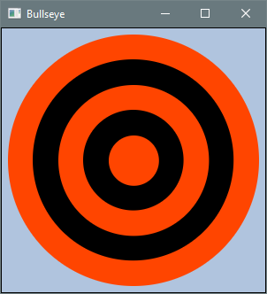
b. Blender. Draws three overlapping circles in primary colors with blended colors in the
intersections. Use Shape.intersect for overlaps and call interpolate on a Color instance to
blend it with another color.
Output 3.8.5b
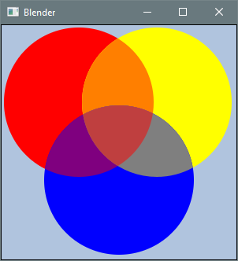
c. Diagonal Bar. Draws a six-sided polygon with a thick border.
Output 3.8.5c
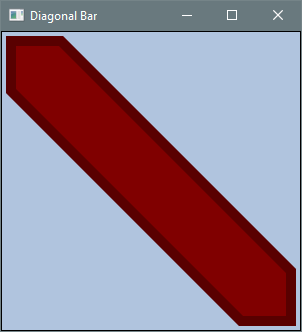
d. Poisonous Mushroom. Draws a mushroom cap and stem. The cap is formed by a circle with its lower half obscured by a background-colored rectangle so that it appears as a semicircle.
Output 3.8.5d
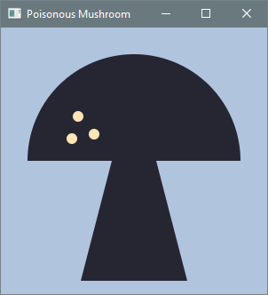
Note: For problems e–f, consult the API documentation for Text and Font. A color has a
fourth attribute beyond its RGB components — its alpha value (opacity). To create semi-transparent
shapes, either use the four-argument Color constructor or call interpolate on a color, blending
it toward Color.TRANSPARENT.
e. Alpha Values. Draws three circles with the bottom half of each obscured by a semi-transparent rectangle labeled with its alpha value.
Output 3.8.5e
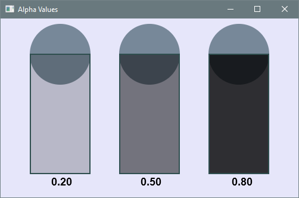
f. Tow Away Zone. Draws a circle with a diagonal strike-through over the text “No Parking.” Use
a circle with a thick stroke and remove its fill by calling setFill(null). Use a rotated rectangle
for the strike-through.
Output 3.8.5f
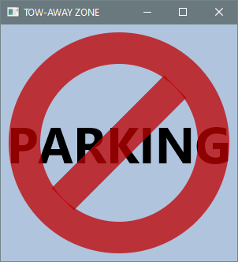
Note: Problems g–k involve shape classes not introduced in the chapter: Arc, Ellipse,
Line, and Polyline.
g. Butterfly. Draws a butterfly. Use Line for the antennas.
Output 3.8.5g
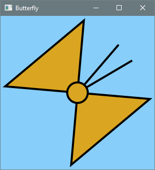
h. Droid. Draws a robot. Use Arc for the semicircular head and Line for the antennas.
Output 3.8.5h
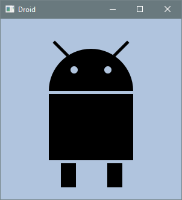
i. Muffin. Draws a cat face. Use Ellipse for the head, Line for the whiskers, and Arc for
the mouth.
Output 3.8.5i
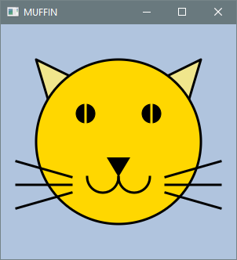
j. Poisonous Mushroom 2. Draws a mushroom cap and stem. Use Arc for the cap, then combine the
cap and stem into a single shape using Shape.union.
Output 3.8.5j
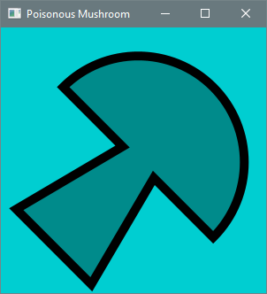
k. TIE Fighter. Draws a TIE fighter with a central cockpit (Ellipse), two wings (Polyline),
and two struts (Polygon) connecting the cockpit to the wings.
Output 3.8.5k
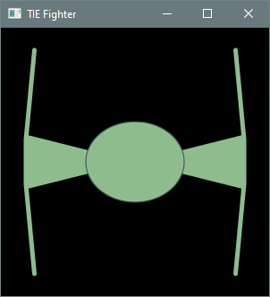
Note: Problems l-n use BoxBlur and Reflection effects. Other necessary classes include
Font, Text, Arc, Ellipse, and Line.
l. Planet and Moon. Draws a planet and a crescent moon using an Arc with a BoxBlur effect
for the planet. The crescent is formed via shape intersection.
Output 3.8.5l
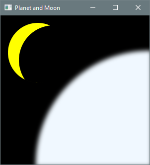
m. Reflector. Displays rotated text inside an ellipse with BoxBlur and Reflection effects.
Output 3.8.5m
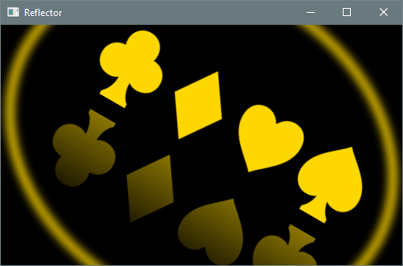
n. Sands of Time. Draws an hourglass with falling sand using Arc for the sides. Coordinates
and sizes are fixed for a square canvas; the image does not scale.
Output 3.8.5n
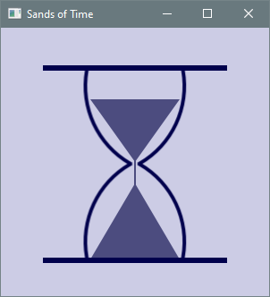